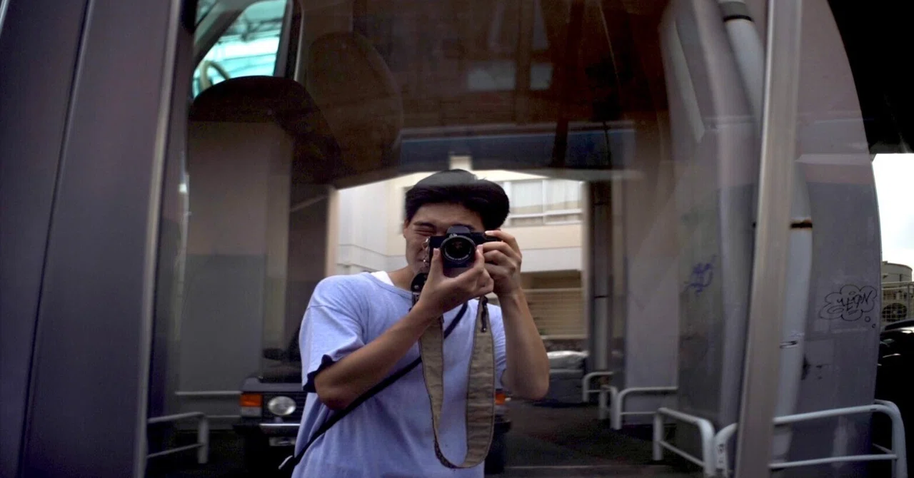
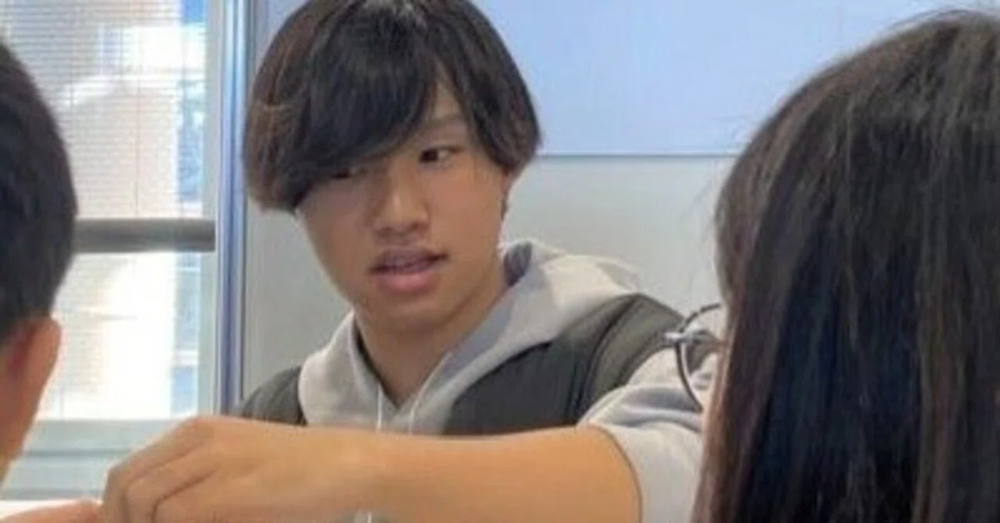
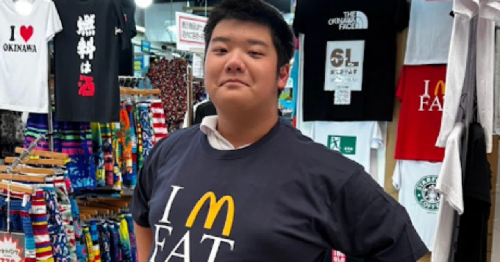
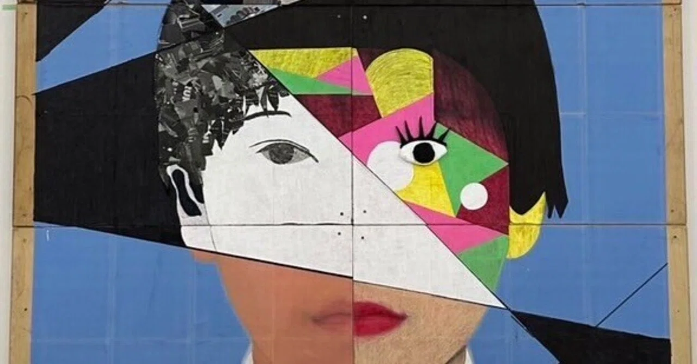
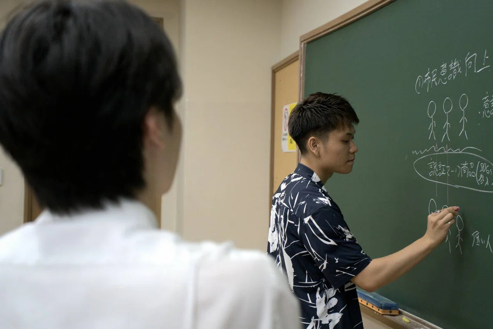
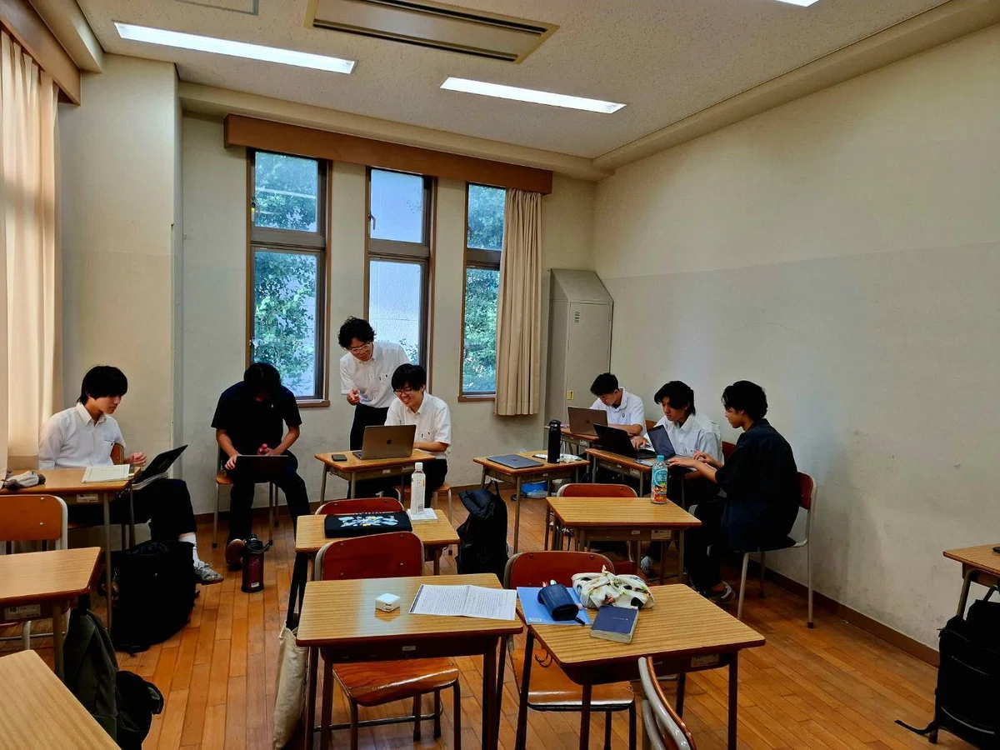

Project Murabito-A
OBが母校に帰り、探究学習と総合型選抜を歩む後輩たちに寄り添う。 かつて自分と対話することに葛藤していたOBたちが、村人として先人となり、あなたの問いに伴走する。
村人Aについて →About
あなたの未来の作り方 Who are you?&How to be?
文部科学省が探究学習を必修化したことから、多くの高校生がプロジェクト活動に取り組んでいる。しかし、突然「プロジェクト」と聞いてもピンと来ない人も多いのではないでしょうか？。
そして大学受験を考えた時、自分のプロジェクトをどう活かせば良いのかわからない人がいるのではないか。
私たち村人Aはそんな高校生に対して、プロジェクトデータバンク、プロジェクトメンタリング、受験対策講座索咲処（さくところ）の3つのサポートをを通して、あなたの未来を作るお手伝いをする団体である。
今ではサポートを受けた生徒が村人となり、下の世代へサポートするという循環も生まれている。
Members
村人A初代代表
夏の講座「索咲処」初代座長
「人間が魅せる手に汗握る生き死にが掛かるような一瞬を引き出す」をテーマに日々活動。講座では「実存と構造の狭間で、肩書きのない物語を対話する」を実践。
村人A2代目代表
絵が描けない美大生として日々生きる。現在は村人Aの代表として高校内での授業に顔を出しながら初代代表と共に外部との接続を模索中。
夏の講座「索咲処」2代目座長
社会学専攻。高校時代は探究でまちづくりに関わる。論文の構成や問いの立て方を一緒に考える。
デザインと福祉の交差点を探究。AO入試経験者として、自己分析・志望理由書のサポートが得意。
デザインと福祉の交差点を探究。AO入試経験者として、自己分析・志望理由書のサポートが得意。
デザインと福祉の交差点を探究。AO入試経験者として、自己分析・志望理由書のサポートが得意。
デザインと福祉の交差点を探究。AO入試経験者として、自己分析・志望理由書のサポートが得意。
デザインと福祉の交差点を探究。AO入試経験者として、自己分析・志望理由書のサポートが得意。
デザインと福祉の交差点を探究。AO入試経験者として、自己分析・志望理由書のサポートが得意。
note
村人Aプログラムの授業、夏の講座「索咲所」の振り返りをnoteに投稿している。
かつて同じ教室で悩み、現在は大学生として母校の「学びの計画書」執筆を支える筆者が、迷いながらも自らの本心と対峙し、主体的に未来を切り拓こうとする高校2年生たちの姿に感銘を受け、共に歩む「同志」としての決意を綴った活動報告。
代表である中島康成が、AIや他者の代弁による「整った言葉」に抗い、葛藤の中で生徒自らが絞り出した「血の通った言葉」にこそ人間の表現の本質と価値があることを説いた、教育者としての深い洞察とエールを込めた手記。
「総合型選抜に受かる人の特徴なんて存在しない」――村人Aの中島康成が母校の高校3年生に向けて始めた受験講座の初回、小手先の技術論ではなく「自分は何者か」を問い続けることの本質を語った、熱量あふれる講座レポートです。
Project Data Bank
先人たちのプロジェクトを紹介。ただの紹介だけにとどまらず、どんな想い・きっかけで始めたのか、どんな苦難があったのかなど先人たちの経験談を踏まえた記事となっている。

「見栄のためにやっても虚しい」――映像や写真への情熱に正直に生き、勉強も仕事観も全部本音でさらけ出す青山泰三さんのリアルな言葉と生き様に迫ったインタビュー記事。

「満足かと言われたら、それは違う」――子どもたちへの防災ワークショップを3年間やり続けた槇本悠哉さんが、チームの不和や先生への憤りも包み隠さず語る、後悔と誇りが交差するリアルなインタビュー記事。

「好きなことだけすればいいじゃん」――小学生からコードを書き、今はオープンワールドVRゲームを構想する高校2年生・岡田和真が、失敗も過程のひとつと言い切る、迷いのない哲学に迫ったインタビュー記事
現在は立教大学で映像と演劇の学びに心酔する大塚有楠氏の変容と、映画を介した独自の教育観への情熱を、深い敬意と好奇心を持って綴った人物評伝。
「日常を撮ろうと思った時点で、それはもう非日常である」――サカナクションのMV監督を夢見て映像を撮り続ける19歳・相方瑠伊が、完璧主義ゆえの葛藤と自由な映像哲学を語るインタビュー記事。

「床で寝る創設者」として知られる比嘉辰大さんが、女装・ジェンダー・SEXまでフランクに語り尽くす――ラベルを嫌い、自分のままで生きる19歳のリアルに迫ったインタビュー記事。
「見栄のためにやっても虚しい」――映像や写真への情熱に正直に生き、勉強も仕事観も全部本音でさらけ出す青山泰三さんのリアルな言葉と生き様に迫ったインタビュー記事。
「満足かと言われたら、それは違う」――子どもたちへの防災ワークショップを3年間やり続けた槇本悠哉さんが、チームの不和や先生への憤りも包み隠さず語る、後悔と誇りが交差するリアルなインタビュー記事。
「好きなことだけすればいいじゃん」――小学生からコードを書き、今はオープンワールドVRゲームを構想する高校2年生・岡田和真が、失敗も過程のひとつと言い切る、迷いのない哲学に迫ったインタビュー記事
現在は立教大学で映像と演劇の学びに心酔する大塚有楠氏の変容と、映画を介した独自の教育観への情熱を、深い敬意と好奇心を持って綴った人物評伝。
「日常を撮ろうと思った時点で、それはもう非日常である」――サカナクションのMV監督を夢見て映像を撮り続ける19歳・相方瑠伊が、完璧主義ゆえの葛藤と自由な映像哲学を語るインタビュー記事。
「床で寝る創設者」として知られる比嘉辰大さんが、女装・ジェンダー・SEXまでフランクに語り尽くす――ラベルを嫌い、自分のままで生きる19歳のリアルに迫ったインタビュー記事。
Saturday Program
時間：土曜3・4限（プロジェクト科） ／ 対象：聖学院高校 GIC 3年生
「自分とは何者か？」を問い続ける、双方向の対話型授業。大学受験に向けて、自分の軸を言語化していく場です。本授業は、GIC独自科目であるLiberal Artsと連携をとりながら進める。
これまでのプロジェクト・探究活動を振り返り整理する。そこから自分の研究計画を立て、志望理由書の第一稿を完成させる。
プロジェクトの振り返りと大学研究への接続。3年間の活動の成果を論文形式でまとめ、大学での研究につなげる。
高校3年生の夏休みの期間、総合型選抜に集中して向き合う特別講座。 大学へ実際に出願していく際に使う志望理由書をはじめとした書類を添削・ブラッシュアップする。 「書く・作る→村人に見せて意見をもらう→改善する」この繰り返し。
定員： 20名程度
対象： 聖学院高校の3年生
費用： 無料


Contact
索咲処への参加申し込み、メンタリングの相談、取材・コラボレーションのご連絡はこちらから。